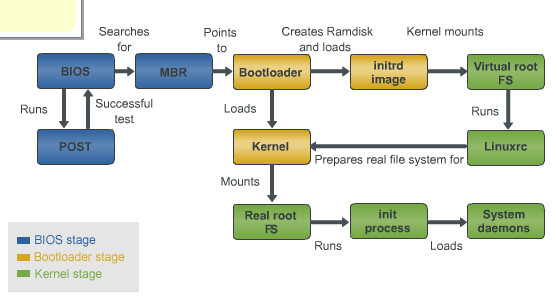

Boot process
Quá trình khởi động này thường chia thành nhiều giai đoạn, nhưng thông thường sẽ chỉ gồm 2 giai đoạn Single-Stage và Two-Stage

Soc ROM Bootloader
Hệ thống khởi động lần đầu tiên hoặc reset cứng thì quyền kiểm soát hệ thống thuộc về “reset vector”, đó là một đonạ mã asembly được ghi xuống chip từ trước bởi nhà sản xuất. Sau đó, nó sẽ trỏ tới địa chỉ vùng nhớ chứa các đoạn mã khởi động đầu tiên, ở đây là “boot rom”. Nếu không có nó thì ta sẽ chẳng thể biết thực thi bắt đầu từ đâu.
Vậy thì trỏ đến địa chỉ của “boot rom” để làm gì? Câu trả lời là nó sẽ sao chép nội dung trong file “MLO” hay còn được biết đến với tên gọi SPL, viết tắt của “Second Program Loader”, đây là chương trình tải phụ vào IRAM và thực thi nó. Vì một lý do nào đó, bộ nhớ “boot rom” khá nhỏ nên những mã code ở đó sẽ thực hiện một số công việc như khởi tạo một số phần cứng cần thiết cho việc tải SPL lên hệ thống như : MMC/eMMC, SDcard, NAND flash. Những phần cứng kể trên thường được ta gọi chung là “boot device”. Vậy việc lựa chọn boot device nào trong những “boot device” kể trên dựa trên điều gì? Nó dựa vào các pin thông qua switch/jump trên phần cứng như mô tả ở bảng dưới đây:
| BOOT_CFG1[7:4] | Boot device |
|---|---|
| 0000 | NOR/OneNAND (EIM) |
| 0001 | QSPI |
| 0011 | Serial ROM (SPI) |
| 010x | SD/eSD/SDXC |
| 011x | MMC/eMMC |
| 1xxx | Raw NAND |
Second Program Loader (SPL)
Nhiệm vụ của SPL là tiếp tục cài đặt các thành phần cần thiết như DRAM controler, eMMC …, sau đó tải U-boot tới đại chỉ CONFIG_SYS_TEXT_BASE của RAM. Nói một cách đơn giản, chắc năng chính của SPL là tải được U-boot lên RAM.
U-Boot
SPL tải U-Boot lên RAM vậy U-Boot có vai trò gì tiếp theo trong quá trình khởi động của hệ thống? U-Boot sau khi được tải lên RAM, nó thực hiện việc định vị lại địa chỉ của RAM và nhảy đến mã của U-Boot sau khi rời đi. Tại thời điểm này, U-Boot sẽ kiểm tra file uEnv.txt có tồn tại hay không, nếu có thì sẽ tải nó vào RAM ở bước kế tiếp. Vậy uEnv.txt là thứ gì? nó là một bootscript, định nghĩa các tham số cấu hình và tham số kernel. Các tham số này thường đã được mặc định cấu hình trong U-Boot nhưng chúng ta có thể sửa và xóa các cấu hình này thông qua file uEnv.txt, cho nên việc tải uEnv.txt là một tùy chọn, bạn có thể không cần tới nó.
Công việc tiếp theo của U-Boot sẽ là tải kernel, device tree lên RAM tại các địa chỉ mà được cấu hình từ trước ở mã nguồn U-Boot hoặc trong file uEnv.txt. Sau cùng, các thông số kernel và quyền thực thi hệ thống lại cho kernel.
Một vài câu hỏi mà ta cần giải đáp
Quá trình khởi động chia ra Single Stage/ Two Stage, cần SPL để tải U-Boot lên IRAM vậy cái SPL đó phải làm gì khác ngoài việc tải mỗi U-Boot chứ?
Câu trả lời là do các nhà sản xuất và phần cứng của họ có mã ROM khác nhau để khởi động tại thời điểm ban đầu và ta cần cái SPL để có thể tải chính xác U-Boot và tiết kiệm dung lượng IRAM.
U-Boot định vị lại địa chỉ trên RAM để làm gì?
Khi bạn là tộc trưởng và cả dân làng của bạn bị ném lên một vùng đất xa lạ, bạn cần tổ chức và phân chia lại các khu vực sinh sống cho các thành phần dân cư trong làng của bạn. U-Boot cũng thực hiện việc đó nhằm đảm bảo cho các thành phần như U-Boot, kernel image, device tree, rootfs … khi tải lên RAM nếu không muốn chúng bị ghi đè lẫn nhau mà cần chúng được bố trí vào các vị trí được tính toán từ trước theo ý của bạn.
Linux Kernel
Sau các quá trình kể trên, U-Boot đưa quyền thực thi cho kernel, nó sẽ thực hiện mount hệ thống file (Rootfs) và chạy tiến trình Init trên RAM. Vậy Init là các tiến trình gì chứ? Tiến trình này được chạy đầu tiên và hoạt động cho đến khi hệ thống kết thúc. Nó khởi tạo toàn bộ các tiến trình con khác trên User Space.